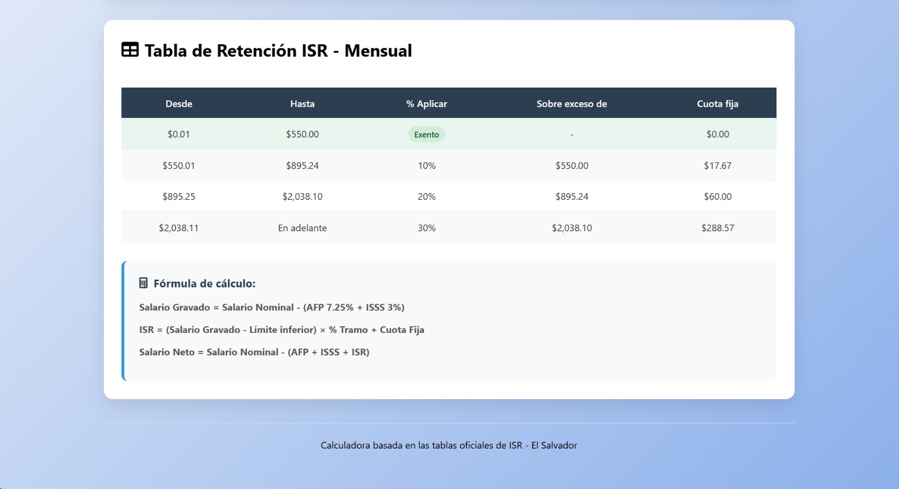

ES
Full stack
Tecnologías utilizadas
HTML
CSS
JavaScript
Competencias técnicas
Implementación de algoritmos para cálculos contables
Validación de datos de entrada
Diseño de interfaces para ingreso y visualización de datos
Integración entre frontend y backend
Precisión y control de resultados numéricos
